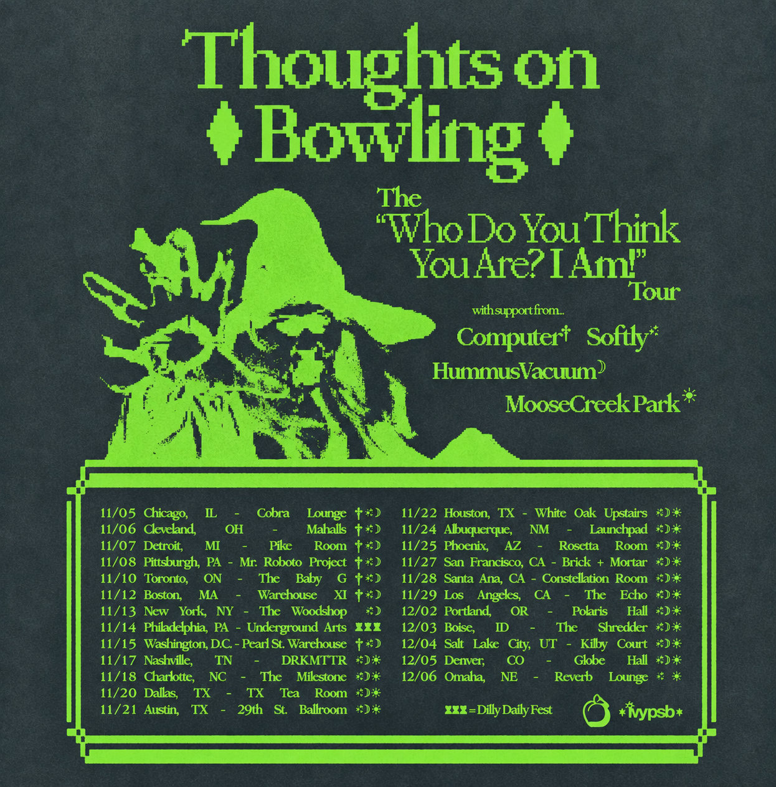

Thoughts on Bowling
with Softly · HummusVacuum · MooseCreek Park
- Doors
- 7:00 PM
- Show
- 8:00 PM
- Ages
- All Ages
About the Show
Sad songs, fast guitars, and a healthy sense of humor. Thoughts on Bowling brings its own brand of Midwest emo to The Shredder in Boise on Thursday, December 3, 2026, alongside Softly, HummusVacuum, and MooseCreek Park.
Based between Northwest Arkansas and Chicago, Thoughts on Bowling combines intricate guitar work, energetic instrumentals, and emotionally charged vocals. Their latest EP, *who do you think you are? I am.*, explores relationships, life, and loss without losing the playful personality that runs through their music.
Softly brings heartfelt lyrics and raw emotion, while Columbus, Ohio's HummusVacuum mixes catchy emo-punk hooks with plenty of humor. Rounding out the lineup, Long Island's MooseCreek Park delivers lightning-fast guitar riffs and infectious pop-punk melodies.
Four bands covering everything from fifth-wave Midwest emo and math rock to indie rock and punk. If you're into clever guitar parts, big feelings, and songs worth screaming along to, there's plenty to love here.
Presented by Duck Club Presents.